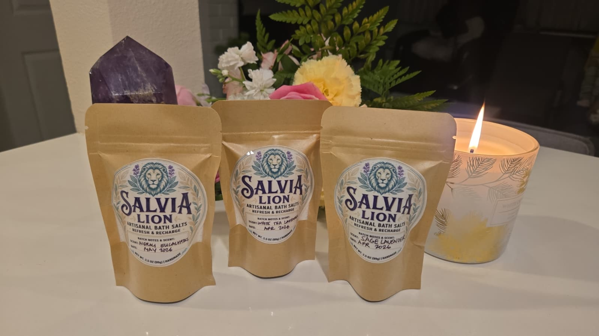

I remember coming home from my last job carrying everything. I didn't have the words for it then. I just knew that other people's energy, their stress, their anxiousness, would settle into me through the day and follow me home.
It took me some time to understand what was happening. One reiki session opened up a whole new world for me. It taught me how to clear energy instead of absorbing it and holding on.
This guide is the simplest version of what I learned.
People have soaked in salt water to feel better for a very long time. The warmth loosens you. The salt makes the water feel heavier, more held. And when you pull the plug and watch the water drain, something in you registers it. The day is going with it.
You are not taking it to bed. You are clearing yourself before you step inside your sanctuary.
The warm water loosens what you have been holding all day. Your shoulders come down. Your breath slows on its own. The salt makes the water feel heavier somehow, like it is holding you, and your body starts to believe it is safe to put things down.
Then comes the part I think matters most. You watch it drain.
When the water goes down, something in you registers it. The day is leaving with it. You are not carrying it to bed.
I've noticed the people who skip that part say the bath was nice but nothing really shifted. The ones who stay and watch it go tell me they feel lighter. Clearer. Like themselves again.
Every bag is made by hand and reiki-charged before it leaves me, set with the intention of clearing and restoring.
Leave your phone outside the bathroom before you start. Not just silenced. Outside. I'd like you to think of this as the one part of your day that belongs only to you.
Run the water as warm as you like. Pour the whole bag in and watch the salt dissolve. Then, this is the part I would gently ask you not to skip: stand at the edge of the tub, rest your hands over the water, and say this, out loud or quietly to yourself:
"I let go of everything that is not mine. This water is clearing me. I will step out lighter than I stepped in."
Light a candle. Set a crystal nearby if you have one. That is all. You are ready.
Get in slowly. For the first minute, just breathe. If your mind starts making lists, you can tell it, once, "not right now," and come back to your breath.
Say it at your own pace. You do not have to fully believe it yet. Your body is listening even when your mind is still busy.
When you are ready, pull the plug and stay in while the water drains. Watch it go. Watch everything you took on today leave with the water.
Then step out, wrap up in something warm, and give yourself twenty minutes before the world comes back in. You are done for the night.
Every day empties you in a different way. Choose the one that meets you where you are tonight.
Not one hard thing today, just a hundred small ones. This one slows everything down and gives you the kind of sleep where you wake up feeling human again.
You feel scattered, like you cannot quite find yourself. This one clears the fog and brings you back to you.
You are carrying energy that was never yours. This is the deeper cleanse, for the nights you need a real reset.
Say it slow. Your body is listening.

This works with any bath salt you have. I'd like to think it works best with my three, because the week is built around them. One bag is one soak. Three bags is a whole week, one for each kind of day.
Get the 3-Pack or explore everything at salvialion.comAll day you carried things that were never yours to carry. You do not have to take them to bed with you too.
If I only reach one person with this, that is enough. That is plenty. I hope tonight that person is you.
You gave everything today. Now you get to take something back.